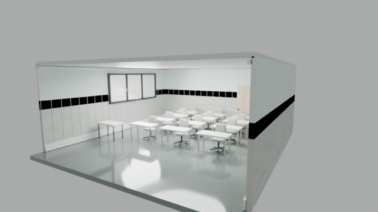
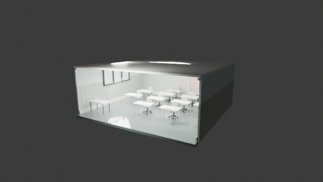
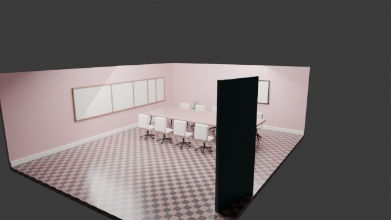
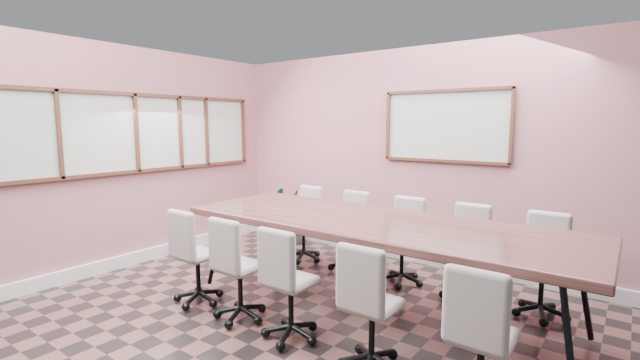

I001整体恢复度（0–100，粗粒度即可） 重要缺陷 1 请选择物体识别与遗漏相对位置及布局物体朝向相对比例几何和部件连接材质与贴图相机与构图光照与阴影其他严重度（可选）轻微中等严重重要缺陷 2 请选择物体识别与遗漏相对位置及布局物体朝向相对比例几何和部件连接材质与贴图相机与构图光照与阴影其他严重度（可选）轻微中等严重重要缺陷 3 请选择物体识别与遗漏相对位置及布局物体朝向相对比例几何和部件连接材质与贴图相机与构图光照与阴影其他严重度（可选）轻微中等严重其他意见（可选）
I003整体恢复度（0–100，粗粒度即可） 重要缺陷 1 请选择物体识别与遗漏相对位置及布局物体朝向相对比例几何和部件连接材质与贴图相机与构图光照与阴影其他严重度（可选）轻微中等严重重要缺陷 2 请选择物体识别与遗漏相对位置及布局物体朝向相对比例几何和部件连接材质与贴图相机与构图光照与阴影其他严重度（可选）轻微中等严重重要缺陷 3 请选择物体识别与遗漏相对位置及布局物体朝向相对比例几何和部件连接材质与贴图相机与构图光照与阴影其他严重度（可选）轻微中等严重其他意见（可选）
I002整体恢复度（0–100，粗粒度即可） 重要缺陷 1 请选择物体识别与遗漏相对位置及布局物体朝向相对比例几何和部件连接材质与贴图相机与构图光照与阴影其他严重度（可选）轻微中等严重重要缺陷 2 请选择物体识别与遗漏相对位置及布局物体朝向相对比例几何和部件连接材质与贴图相机与构图光照与阴影其他严重度（可选）轻微中等严重重要缺陷 3 请选择物体识别与遗漏相对位置及布局物体朝向相对比例几何和部件连接材质与贴图相机与构图光照与阴影其他严重度（可选）轻微中等严重其他意见（可选）
I004整体恢复度（0–100，粗粒度即可） 重要缺陷 1 请选择物体识别与遗漏相对位置及布局物体朝向相对比例几何和部件连接材质与贴图相机与构图光照与阴影其他严重度（可选）轻微中等严重重要缺陷 2 请选择物体识别与遗漏相对位置及布局物体朝向相对比例几何和部件连接材质与贴图相机与构图光照与阴影其他严重度（可选）轻微中等严重重要缺陷 3 请选择物体识别与遗漏相对位置及布局物体朝向相对比例几何和部件连接材质与贴图相机与构图光照与阴影其他严重度（可选）轻微中等严重其他意见（可选）